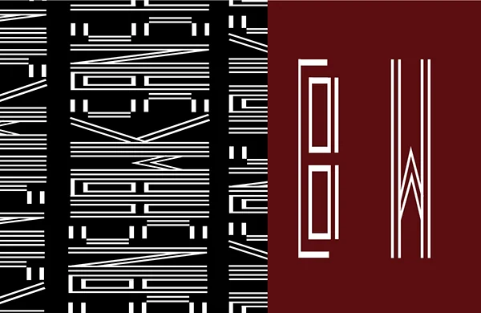
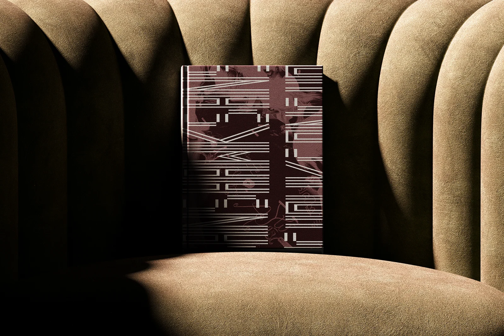
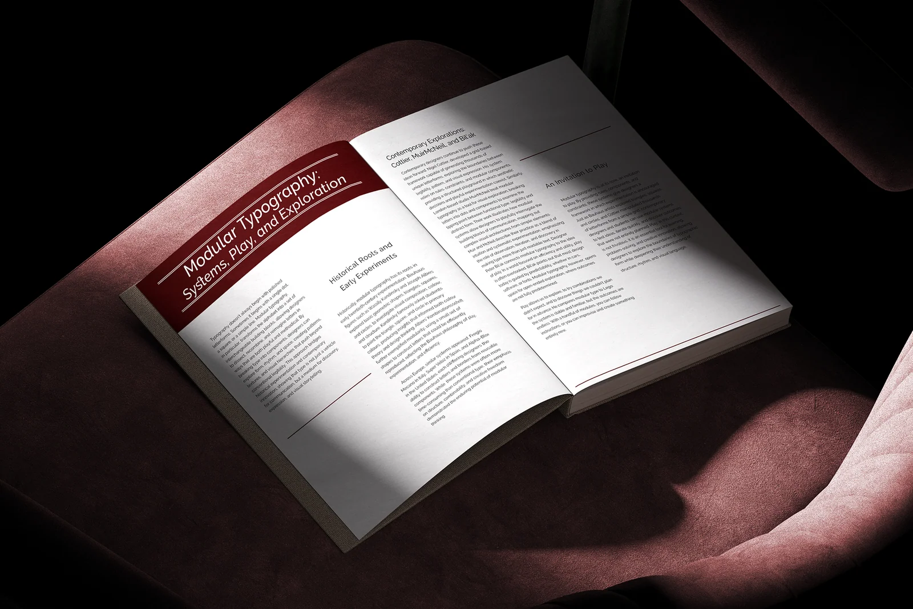

College project · Type design
Hawksans Typeface
An elongated modular display face, explored through a printed specimen.

Project brief
Explore how far a sans serif letterform can stretch while remaining readable. I developed Hawksans as a modular display face for large-scale use.
My role
Designer (student)
Process & sketches
I used grids and repeated strokes to construct the letters, adjusting their proportions and spacing to find a rhythm across the alphabet.
Design decisions
Long vertical strokes create the optical effect. In the specimen, a repeated pattern on black faces two isolated letters on burgundy, so the reader can see both the texture and the construction.
Outcome
Making the specimen deepened my understanding of type anatomy and optical balance, especially how small changes in spacing affect a distorted letter.
Design details





